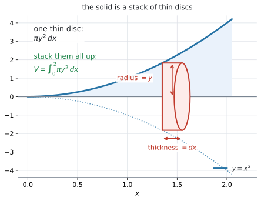
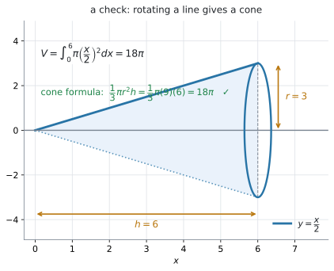

AHL 5.12b — Volumes of revolution（回転体の体積）
- volume of revolution（回転体の体積）が、薄い円板を積み重ねたものだと説明できる。
- \(x\) 軸のまわりの回転で、\(V = \displaystyle\int_{a}^{b}\pi y^{2}\,dx\) を使える。
- \(y\) 軸のまわりの回転で、\(V = \displaystyle\int_{a}^{b}\pi x^{2}\,dy\) を使える。
- そのために、\(x^{2}\) を \(y\) の式に直し、端も \(y\) の値に直せる。
- 体積の式に絶対値が要らない理由を説明できる。
- 答えに \(\pi\) を残した形と小数の形の両方を書き、単位（cm\(^{3}\) など）を付けられる。
The idea
1. 薄い円板を、積み重ねます
曲線と \(x\) 軸ではさまれた領域を、\(x\) 軸のまわりに \(1\) 回転させると、立体ができます。これを solid of revolution（回転体）といいます。
\[ V = \int_{a}^{b}\pi y^{2}\,dx \tag{1}\]
公式集の \(5.12\) の欄にあります。配られるので、覚える必要はありません。 見出しは「Volume of revolution about \(x\) or \(y\)-axes」で、\(y\) 軸のための式（第3節）と \(2\) つ並んでいます。
面積の式には modulus（絶対値）が付いていましたが（AHL 5.12a）、体積の式には付いていません。 \(y\) が負でも \(y^{2}\) は正になるので、\(2\) 乗が絶対値の代わりをしています（第2節）。

図 1 を見てください。回転体を、軸に垂直な薄い disc（円板）に切り分けます。
\(1\) 枚の円板は、
- 半径が、その位置での \(y\)
- 厚みが \(dx\)
の cylinder（円柱）です。cylinder の体積は \(\pi r^{2}h\)（公式集の Prior learning の欄）ですから、\(1\) 枚の体積は
\[ \pi y^{2} \times dx \]
です。これを \(x = a\) から \(x = b\) まで足し合わせたものが、式 1 です。
\[ V = \int_{a}^{b}\pi y^{2}\,dx \]
2. \(x\) 軸のまわりの回転
\(y = x^{2}\) を、\(0 \leq x \leq 2\) で \(x\) 軸のまわりに回します。
手順は \(4\) つです
- \(y\) を \(x\) の式で書く … \(y = x^{2}\)
- \(2\) 乗する … \(y^{2} = x^{4}\)
- \(\pi\) を付けて積分する
\[ V = \int_{0}^{2}\pi x^{4}\,dx = \pi\left[\frac{x^{5}}{5}\right]_{0}^{2} = \pi \times \frac{32}{5} = \frac{32\pi}{5} \]
- 小数にして、単位を付ける
\[ V = \frac{32\pi}{5} = 20.1 \]
\(\pi\) は定数なので、\(\displaystyle\int\) の前に出しておくと計算が楽になります。
\[ \int_{a}^{b}\pi y^{2}\,dx = \pi\int_{a}^{b} y^{2}\,dx \]
ただし、出したまま書き忘れないでください。 \(\pi\) の付け忘れは、この項目で最も多い失点です。
\(2\) 乗するので、負は消えます
面積のときは、曲線が \(x\) 軸の下に入ると絶対値が要りました（AHL 5.12a）。体積では要りません。
\(y = -3\) でも \(y = 3\) でも、円板の半径は \(3\) です。\(y^{2}\) はどちらも \(9\) になります。
\[ (-3)^{2} = 3^{2} = 9 \]
回転させてしまえば、軸の上か下かは関係なくなります。 ですから、体積の式には絶対値がありません。
曲線が軸を横切っても、そのまま積分して構いません。 それぞれの \(x\) に対して円板が \(1\) 枚できるだけで、重なりは起きません。
たとえば \(y = x^{3}-4x\) を \(-2 \leq x \leq 2\) で \(x\) 軸のまわりに回すと、山と谷が別々の場所にあるので、\(2\) つのふくらみが並んだ立体になります。\(\displaystyle\int_{-2}^{2}\pi y^{2}\,dx = \dfrac{2048\pi}{105} = 61.3\) が、そのまま体積です。
面積（AHL 5.12a）と違って、区切る必要がありません。 ここが体積のほうが楽なところです。
3. \(y\) 軸のまわりの回転
公式集の \(2\) つ目は、\(x\) と \(y\) が入れかわった形です。
\[ V = \int_{a}^{b}\pi x^{2}\,dy \tag{2}\]
円板が横向きに積まれる、と思ってください。\(1\) 枚の円板は
- 半径が、その高さでの \(x\)
- 厚みが \(dy\)
です。
\(x^{2}\) を \(y\) の式に直します
積分の変数が \(y\) なので、中身も \(y\) の式でなければなりません（AHL 5.12a）。
\(y = x^{2}\) を \(0 \leq y \leq 4\) で \(y\) 軸のまわりに回すなら、必要なのは \(x^{2}\) であって \(x\) ではありません。
\[ y = x^{2} \quad \Longrightarrow \quad x^{2} = y \]
式に入るのは \(x^{2}\) です。ですから \(y = x^{2}\) のときは、\(x = \sqrt{y}\) に直す手間さえ要りません。 そのまま \(x^{2} = y\) と読めます。
面積のとき（AHL 5.12a）は \(x\) そのものが要ったので、\(\sqrt{y}\) に直す必要がありました。体積のほうが楽になる場合があります。
| もとの式 | \(x^{2}\) を \(y\) で書くと |
|---|---|
| \(y = x^{2}\) | \(x^{2} = y\) |
| \(y = 3x\) | \(x^{2} = \dfrac{y^{2}}{9}\) |
| \(y = \sqrt{x}\) | \(x^{2} = y^{4}\) |
| \(y = \dfrac{x^{2}}{4}\) | \(x^{2} = 4y\) |
端も \(y\) の値に直します
\[ V = \int_{0}^{4}\pi y\,dy = \pi\left[\frac{y^{2}}{2}\right]_{0}^{4} = \pi \times 8 = 8\pi = 25.1 \]
\(x\) 軸のときの \(\dfrac{32\pi}{5} = 20.1\) とは違う値です。 回す領域も違います。\(x\) 軸のときは曲線の下、\(y\) 軸のときは曲線の左の部分でした。同じ曲線でも、軸が変われば領域も立体も変わります。
4. どちらの軸か、先に決めます
問題文が「どの軸のまわりに回すか」を必ず言っています。
| 問題文 | 使う式 | 直すもの | 端は |
|---|---|---|---|
about the x-axis |
\(\displaystyle\int\pi y^{2}\,dx\) | \(y\) を \(x\) の式で | \(x\) の値 |
about the y-axis |
\(\displaystyle\int\pi x^{2}\,dy\) | \(x^{2}\) を \(y\) の式で | \(y\) の値 |
about the ... の部分を丸で囲んでから始めてください。 軸を取り違えると、途中がすべて合っていても答えが違います。
5. 単位を付けます
長さが cm なら、体積は cm\(^{3}\) です。
\[ V = 8\pi \ \text{cm}^{3} = 25.1 \ \text{cm}^{3} \]
exact value と言われたら \(8\pi\)、そうでなければ \(25.1\) です（AHL 5.11a）。
Why it works
ここでは、公式集の式がなぜ \(\pi y^{2}\) という形なのかと、それが知っている立体で合うことを確かめます。
なぜ \(\pi y^{2}\) なのか
回転体を、軸に垂直な平面で薄く切ります。切り口はいつも円です。回転させて作った立体だからです。
図 1 の赤い部分が、その \(1\) 枚です。
- 円の半径は、その位置での曲線の高さ、つまり \(y\)
- 円の面積は \(\pi y^{2}\)（公式集の Prior learning の欄）
- 板の厚みを \(dx\) とすると、体積は \(\pi y^{2} \times dx\)
これを \(x = a\) から \(x = b\) まで足し合わせると、式 1 になります。
定積分が「短ざくを足し合わせたもの」だったのと、まったく同じ組み立てです（AHL 5.12a）。違うのは、足すものが長方形ではなく円板だということだけです。
\(y\) 軸のまわりなら、板を横向きに積むだけです。半径が \(x\)、厚みが \(dy\) になって 式 2 ができます。
円錐の公式が出てきます
\(y = \dfrac{x}{2}\) を \(0 \leq x \leq 6\) で \(x\) 軸のまわりに回すと、cone（円錐）ができます。

図 2 がその絵です。\(x = 6\) のとき \(y = 3\) なので、半径 \(3\)、高さ \(6\) の円錐です。
\[ V = \int_{0}^{6}\pi\left(\frac{x}{2}\right)^{2}dx = \pi\int_{0}^{6}\frac{x^{2}}{4}\,dx = \pi\left[\frac{x^{3}}{12}\right]_{0}^{6} = 18\pi \]
円錐の公式（公式集の \(3.1\) の欄）でも確かめられます。
\[ V = \frac{1}{3}\pi r^{2}h = \frac{1}{3}\pi(9)(6) = 18\pi \ ✓ \]
知っている立体で答えが合うことを \(1\) 回見ておくと、式が信用できるようになります。
一般に、\(y = mx\) を \(0\) から \(h\) まで回すと
\[ V = \int_{0}^{h}\pi m^{2}x^{2}\,dx = \frac{\pi m^{2}h^{3}}{3} \]
で、\(r = mh\) と書き直せば \(\dfrac{1}{3}\pi r^{2}h\) になります。円錐の公式そのものが、この積分から出てきます。
Worked examples
問題文は英語です。意味が理解できなかったら、問題文の下の「日本語訳」を開いてください。解説は日本語です。
例題 1 The region enclosed by the curve \(y = x^{2}\), the \(x\)-axis and the line \(x = 2\) is rotated \(360^{\circ}\) about the \(x\)-axis. Find the volume of the solid formed, giving your answer in terms of \(\pi\) and correct to three significant figures.
日本語訳
曲線 \(y = x^{2}\)、\(x\) 軸、および直線 \(x = 2\) で囲まれた領域を、\(x\) 軸のまわりに \(360^{\circ}\) 回転させます。できた立体の体積を、\(\pi\) を使った形と、有効数字 \(3\) 桁の両方で求めなさい。
is rotated 360° about は「〜のまわりに \(1\) 回転させる」、in terms of π は「\(\pi\) を残した形で」という意味です。
about the x-axis なので 式 1 です（表 2）。手順の \(4\) つに沿って進めます（第2節）。
1. \(y\) を \(x\) の式で書く。
\[ y = x^{2} \]
2. \(2\) 乗する。
\[ y^{2} = \left(x^{2}\right)^{2} = x^{4} \]
3. \(\pi\) を付けて積分する。 端は \(x\) の値で、\(0\) から \(2\) です。
\[ V = \int_{0}^{2}\pi x^{4}\,dx = \pi\left[\frac{x^{5}}{5}\right]_{0}^{2} = \pi\left(\frac{32}{5}\right) = \frac{32\pi}{5} \]
4. 小数にして、単位を付ける。 この問題では単位が示されていないので、数だけです。
\[ V = \frac{32\pi}{5} = 20.1 \]
検算。 電卓で \(\displaystyle\int_{0}^{2}\pi x^{4}\,dx\) を計算すると \(20.106\) ✓（GDC 第1節）
大きさの見当も合っています。 この立体は、半径 \(4\)・高さ \(2\) の円柱（体積 \(32\pi \approx 101\)）の中にすっぽり入るので、\(20.1\) は妥当な大きさです。
\[ V = \int_{0}^{2}\pi\left(x^{2}\right)^{2}dx = \pi\int_{0}^{2} x^{4}\,dx \] \[ = \pi\left[\frac{x^{5}}{5}\right]_{0}^{2} = \frac{32\pi}{5} = 20.1 \]
例題 2 The region enclosed by the curve \(y = x^{2}\), the \(y\)-axis and the line \(y = 4\) is rotated \(360^{\circ}\) about the \(y\)-axis.
(a) Write \(x^{2}\) in terms of \(y\).
(b) Find the volume of the solid formed, giving your answer in terms of \(\pi\).
日本語訳
曲線 \(y = x^{2}\)、\(y\) 軸、および直線 \(y = 4\) で囲まれた領域を、\(y\) 軸のまわりに \(360^{\circ}\) 回転させます。
(a) \(x^{2}\) を \(y\) を使って表しなさい。
(b) できた立体の体積を、\(\pi\) を使った形で求めなさい。
(a) 式に入るのは \(x^{2}\) です。\(x\) そのものは要りません（第3節）。
\[ y = x^{2} \quad \Longrightarrow \quad x^{2} = y \]
(b) about the y-axis なので 式 2 です。端も \(y\) の値で、\(0\) から \(4\) です（第3節）。
\[ V = \int_{0}^{4}\pi x^{2}\,dy = \pi\int_{0}^{4} y\,dy \]
\[ = \pi\left[\frac{y^{2}}{2}\right]_{0}^{4} = \pi\left(\frac{16}{2}\right) = 8\pi \]
\[ = 25.1 \]
検算。 この立体は、半径 \(2\)・高さ \(4\) の円柱（体積 \(16\pi\)）の内側にあり、原点をとがった先とする半径 \(2\)・高さ \(4\) の円錐（体積 \(\dfrac{1}{3}\pi(4)(4) = \dfrac{16\pi}{3} = 5.33\pi\)）より大きいはずです。\(8\pi\) はそのあいだにあります ✓
例 1 と同じ曲線ですが、答えが違います。 \(x\) 軸なら \(\dfrac{32\pi}{5}\)、\(y\) 軸なら \(8\pi\) です。回す軸が変われば、別の立体になります。
(a) \[ x^{2} = y \]
(b) \[ V = \int_{0}^{4}\pi y\,dy = \pi\left[\frac{y^{2}}{2}\right]_{0}^{4} = 8\pi = 25.1 \]
例題 3 The region enclosed by the line \(y = \dfrac{x}{2}\), the \(x\)-axis and the line \(x = 6\) is rotated \(360^{\circ}\) about the \(x\)-axis.
(a) Show that the volume of the solid formed is \(18\pi\).
(b) The solid is a cone. Write down its radius and its height, and verify your answer to part (a) using the formula for the volume of a cone.
日本語訳
直線 \(y = \dfrac{x}{2}\)、\(x\) 軸、および直線 \(x = 6\) で囲まれた領域を、\(x\) 軸のまわりに \(360^{\circ}\) 回転させます。
verify は「正しいことを示す根拠を書く」という意味です。ここでは別のやり方で同じ答えを出します。
(a) できた立体の体積が \(18\pi\) であることを示しなさい。
(b) この立体は円錐です。その半径と高さを書き、円錐の体積の公式を使って (a) の答えを確かめなさい。
(a) Show that なので、途中をすべて書きます。
\[ y^{2} = \left(\frac{x}{2}\right)^{2} = \frac{x^{2}}{4} \]
\[ V = \int_{0}^{6}\pi\frac{x^{2}}{4}\,dx = \frac{\pi}{4}\int_{0}^{6}x^{2}\,dx \]
\[ = \frac{\pi}{4}\left[\frac{x^{3}}{3}\right]_{0}^{6} = \frac{\pi}{4} \times \frac{216}{3} = \frac{\pi}{4} \times 72 = 18\pi \]
(b) 図 2 を見てください。\(x = 6\) のとき \(y = 3\) です。
- 半径 \(r = 3\)（いちばん外側の \(y\) の値）
- 高さ \(h = 6\)（回した軸に沿った長さ）
円錐の体積の公式（公式集の \(3.1\) の欄）に入れます。
\[ V = \frac{1}{3}\pi r^{2}h = \frac{1}{3}\pi(3)^{2}(6) = \frac{1}{3}\pi(9)(6) = 18\pi \ ✓ \]
\(2\) つのやり方で同じ答えになりました。
(a) \[ V = \int_{0}^{6}\pi\left(\frac{x}{2}\right)^{2}dx = \frac{\pi}{4}\left[\frac{x^{3}}{3}\right]_{0}^{6} = \frac{\pi}{4}(72) = 18\pi \]
(b) \[ r = 3, \qquad h = 6 \] \[ \frac{1}{3}\pi r^{2}h = \frac{1}{3}\pi(9)(6) = 18\pi \ ✓ \]
例題 4 A bowl is designed by rotating the curve \(y = \dfrac{x^{2}}{4}\), for \(0 \leq y \leq 9\), through \(360^{\circ}\) about the \(y\)-axis. All lengths are in centimetres.
(a) Find the radius of the top of the bowl.
(b) Find the volume of the bowl, correct to three significant figures.
(c) The designer states that the bowl holds more than half a litre. Determine whether this is correct.
日本語訳
\(0 \leq y \leq 9\) について、曲線 \(y = \dfrac{x^{2}}{4}\) を \(y\) 軸のまわりに \(360^{\circ}\) 回転させて、ボウルを設計します。長さの単位はすべてセンチメートルです。
holds は「（容器が）入る」、Determine whether は「〜かどうかを、根拠を示したうえで判断しなさい」という意味です。
(a) ボウルの口の半径を求めなさい。
(b) ボウルの容積を、有効数字 \(3\) 桁で求めなさい。
(c) 設計者は、このボウルには \(0.5\) リットルより多く入ると述べています。これが正しいかどうかを判断しなさい。
(a) 口は \(y = 9\) のところです。
\[ 9 = \frac{x^{2}}{4} \quad \Longrightarrow \quad x^{2} = 36 \quad \Longrightarrow \quad x = 6 \]
半径は \(6\) cm です（長さなので正のほうをとります）。
(b) about the y-axis なので 式 2 です。\(x^{2}\) を \(y\) の式に直します（表 1）。
\[ y = \frac{x^{2}}{4} \quad \Longrightarrow \quad x^{2} = 4y \]
\[ V = \int_{0}^{9}\pi(4y)\,dy = 4\pi\left[\frac{y^{2}}{2}\right]_{0}^{9} = 4\pi\left(\frac{81}{2}\right) = 162\pi \]
\[ V = 508.9 \approx 509 \ \text{cm}^{3} \]
(c) \(1\) リットルは \(1000\) cm\(^{3}\) なので、\(0.5\) リットルは \(500\) cm\(^{3}\) です。
\[ 509 > 500 \]
試験ではこう書く
The volume is \(162\pi = 509\) cm\(^{3}\). Half a litre is \(500\) cm\(^{3}\), and \(509 > 500\), so the designer is correct. However the bowl holds only about \(9\) cm\(^{3}\) more than half a litre, so the claim is only just true.
（体積は \(509\) cm\(^{3}\)。\(0.5\) リットルは \(500\) cm\(^{3}\) で、\(509 > 500\) なので設計者は正しい。ただし差は \(9\) cm\(^{3}\) ほどしかないので、ぎりぎりである、という意味です。）
検算。 半径 \(6\)・高さ \(9\) の円柱の体積は \(\pi(36)(9) = 324\pi\) で、\(162\pi\) はそのちょうど半分です。
\(y = ax^{2}\) を、\(y = 0\) から \(y\) 軸のまわりに回した形は、いつも外側の円柱のちょうど半分になります ✓ \(x\) 軸のまわりや、\(y = 0\) から始まらない場合には成り立ちません。
(a) \[ 9 = \frac{x^{2}}{4} \quad \Longrightarrow \quad x^{2} = 36, \qquad x = 6 \ \text{cm} \]
(b) \[ x^{2} = 4y \] \[ V = \int_{0}^{9}4\pi y\,dy = 4\pi\left[\frac{y^{2}}{2}\right]_{0}^{9} = 162\pi = 509 \ \text{cm}^{3} \]
(c) Half a litre is \(500\) cm\(^{3}\). Since \(509 > 500\), the designer is correct, although the bowl holds only about \(9\) cm\(^{3}\) more.
Common errors
誤り：\(V = \displaystyle\int_{0}^{2}\pi x^{2}\,dx\) と書く（\(y = x^{2}\) をそのまま入れている）。
式に入るのは \(y\) ではなく \(y^{2}\) です。\(y = x^{2}\) なら \(y^{2} = x^{4}\) です。
正しくは：\(\displaystyle\int_{0}^{2}\pi x^{4}\,dx\) です（第2節）。
「\(2\) 乗する」を、独立した \(1\) 段として書いてください。
誤り：\(\displaystyle\int_{0}^{4}\pi x^{2}\,dy\) と書いたまま、\(x\) を残して計算しようとする。
積分の変数が \(y\) なら、中身も \(y\) の式でなければなりません。
正しくは：\(x^{2} = y\) に直して \(\displaystyle\int_{0}^{4}\pi y\,dy\) とします（第3節）。
誤り：\(y = x^{2}\)、\(0 \leq x \leq 2\) を \(y\) 軸で回すとき、\(\displaystyle\int_{0}^{2}\pi y\,dy\) と書く。
\(x = 2\) に対応するのは \(y = 4\) です。
正しくは：\(\displaystyle\int_{0}^{4}\pi y\,dy\) です（第3節）。式を \(y\) に直したら、端も \(y\) に直します。
誤り：\(509\) とだけ書く。あるいは \(509\) cm\(^{2}\) と書く。
体積なので cm\(^{3}\) です（第5節）。
正しくは：\(509\) cm\(^{3}\) です。面積は \(2\) 乗、体積は \(3\) 乗と結びつけてください。
Using your GDC (TI-Nspire CX II)
式を立てるところが、この項目の中身です。電卓は、値を出すのと検算に使います。
1. 体積を計算する
menu → Calculus → Integral積分のテンプレートが出るので、画面に出てくる形のまま入れます。
\[ \int_{0}^{2} \pi x^{4}\,dx \]
\(20.1062\) と出ます（表示桁の設定によって、見える桁数は変わります）。
3.14 と打つと、丸めた値で計算が進みます（AHL 5.9b）。キーボードの \(\pi\) のキーを使ってください。
\(\pi\) を式に入れ忘れると、答えが \(\pi\) 分の \(1\) になります。 \(\pi\) を入れたつもりなのに \(6.4\) のような値が出たら、それを疑ってください。
2. \(\pi\) を残した形も出せます
\(\pi\) を入れずに積分して、答えに \(\pi\) を付ける、というやり方もあります。
\[ \int_{0}^{2} x^{4}\,dx \]
\(6.4\) と出ます。\(6.4 = \dfrac{32}{5}\) なので、答えは \(\dfrac{32\pi}{5}\) です。
分数に直しにくいときは、\(\pi\) を入れたまま計算して小数で答えてください。
3. \(y\) 軸の回転も、同じ機能で出せます
変数の名前を \(y\) にする必要はありません。電卓の中では文字はただの入れ物なので、\(x\) のまま入れて構いません（AHL 5.12a）。
\[ \int_{0}^{9} 4\pi x\,dx \]
\(508.938\) と出ます。ただし答案では \(\displaystyle\int_{0}^{9}4\pi y\,dy\) と \(y\) で書いてください。
4. 確かめ方
\(4\) つあります。
- \(\pi\) が答えに入っているか
- \(2\) 乗したか（\(y\) ではなく \(y^{2}\) を積分したか）
- 軸が合っているか。\(y\) 軸なら式も端も \(y\)（表 2）
- 単位が cm\(^{3}\) か
Exercises
各問題に、折りたたみが3つ付いています。日本語訳、解答例（答案用紙に書くべきこと。英語です）、解説（なぜそうなるか。日本語です）。
まず自分で解いて、次に解答例と見くらべてください。解説は、合わなかったときだけ開けば十分です。
1 The region enclosed by the line \(y = 2x\), the \(x\)-axis and the line \(x = 3\) is rotated \(360^{\circ}\) about the \(x\)-axis. Find the volume of the solid formed, giving your answer in terms of \(\pi\).
日本語訳
直線 \(y = 2x\)、\(x\) 軸、および直線 \(x = 3\) で囲まれた領域を、\(x\) 軸のまわりに \(360^{\circ}\) 回転させます。できた立体の体積を、\(\pi\) を使った形で求めなさい。
\[ V = \int_{0}^{3}\pi(2x)^{2}\,dx = 4\pi\int_{0}^{3}x^{2}\,dx \] \[ = 4\pi\left[\frac{x^{3}}{3}\right]_{0}^{3} = 4\pi(9) = 36\pi \]
\((2x)^{2} = 4x^{2}\) です。\(2\) も \(2\) 乗されます（第2節）。\(2x^{2}\) ではありません。
検算。 これは円錐です。\(x = 3\) で \(y = 6\) なので、半径 \(6\)・高さ \(3\)。
\[ \frac{1}{3}\pi(36)(3) = 36\pi \ ✓ \]
2 The region enclosed by the curve \(y = x^{3}\), the \(x\)-axis and the line \(x = 1\) is rotated \(360^{\circ}\) about the \(x\)-axis. Find the volume of the solid formed, giving your answer in terms of \(\pi\).
日本語訳
曲線 \(y = x^{3}\)、\(x\) 軸、および直線 \(x = 1\) で囲まれた領域を、\(x\) 軸のまわりに \(360^{\circ}\) 回転させます。できた立体の体積を、\(\pi\) を使った形で求めなさい。
\[ V = \int_{0}^{1}\pi\left(x^{3}\right)^{2}dx = \pi\int_{0}^{1}x^{6}\,dx \] \[ = \pi\left[\frac{x^{7}}{7}\right]_{0}^{1} = \frac{\pi}{7} \]
\(\left(x^{3}\right)^{2} = x^{6}\) です。指数は掛けます（SL 1.5）。\(x^{5}\) ではありません。
\[ \frac{\pi}{7} = 0.449 \]
検算。 半径 \(1\)・高さ \(1\) の円柱の体積は \(\pi = 3.14\)。答えの \(0.449\) はその中に収まっています ✓
3 The region enclosed by the curve \(y = \sqrt{x}\), the \(x\)-axis and the lines \(x = 1\) and \(x = 4\) is rotated \(360^{\circ}\) about the \(x\)-axis. Find the volume of the solid formed, correct to three significant figures.
日本語訳
曲線 \(y = \sqrt{x}\)、\(x\) 軸、および直線 \(x = 1\)、\(x = 4\) で囲まれた領域を、\(x\) 軸のまわりに \(360^{\circ}\) 回転させます。できた立体の体積を、有効数字 \(3\) 桁で求めなさい。
\[ V = \int_{1}^{4}\pi\left(\sqrt{x}\right)^{2}dx = \pi\int_{1}^{4}x\,dx \] \[ = \pi\left[\frac{x^{2}}{2}\right]_{1}^{4} = \pi\left(8 - \frac{1}{2}\right) = \frac{15\pi}{2} = 23.6 \]
\(\left(\sqrt{x}\right)^{2} = x\) です。根号が消えて、いちばん短い形になります。
\(2\) 乗すると楽になるのが、この問題の見どころです。面積のほうは \(\displaystyle\int\sqrt{x}\,dx\) で分数の指数が要りますが、体積では要りません。
端が \(1\) から始まることに注意してください。\(0\) ではありません。
検算。 電卓で \(\displaystyle\int_{1}^{4}\pi x\,dx\) を計算すると \(23.562\) ✓
4 The region enclosed by the curve \(y = e^{x}\), the \(x\)-axis and the lines \(x = 0\) and \(x = 1\) is rotated \(360^{\circ}\) about the \(x\)-axis. Find the volume of the solid formed, correct to three significant figures.
日本語訳
曲線 \(y = e^{x}\)、\(x\) 軸、および直線 \(x = 0\)、\(x = 1\) で囲まれた領域を、\(x\) 軸のまわりに \(360^{\circ}\) 回転させます。できた立体の体積を、有効数字 \(3\) 桁で求めなさい。
\[ V = \int_{0}^{1}\pi\left(e^{x}\right)^{2}dx = \pi\int_{0}^{1}e^{2x}\,dx \] \[ = \pi\left[\frac{e^{2x}}{2}\right]_{0}^{1} = \frac{\pi}{2}\left(e^{2}-1\right) = 10.0 \]
\(\left(e^{x}\right)^{2} = e^{2x}\) です。指数は掛けます。 \(e^{x^{2}}\) ではありません。
\(e^{2x}\) の積分は \(\dfrac{1}{2}e^{2x}\) です。中身が \(1\) 次式なので、\(x\) の係数 \(2\) で割ります（AHL 5.11b）。
\[ \frac{\pi}{2}\left(e^{2}-1\right) = \frac{\pi}{2}(6.389) = 10.036 \]
検算。 電卓で \(\displaystyle\int_{0}^{1}\pi e^{2x}\,dx\) を計算すると \(10.036\) ✓
5 The region enclosed by the curve \(y = x^{2}\), the \(y\)-axis and the line \(y = 9\) is rotated \(360^{\circ}\) about the \(y\)-axis. Find the volume of the solid formed, giving your answer in terms of \(\pi\).
日本語訳
曲線 \(y = x^{2}\)、\(y\) 軸、および直線 \(y = 9\) で囲まれた領域を、\(y\) 軸のまわりに \(360^{\circ}\) 回転させます。できた立体の体積を、\(\pi\) を使った形で求めなさい。
\[ x^{2} = y \] \[ V = \int_{0}^{9}\pi y\,dy = \pi\left[\frac{y^{2}}{2}\right]_{0}^{9} = \frac{81\pi}{2} \]
6 The region enclosed by the line \(y = 3x\), the \(y\)-axis and the line \(y = 6\) is rotated \(360^{\circ}\) about the \(y\)-axis. Find the volume of the solid formed, giving your answer in terms of \(\pi\).
日本語訳
直線 \(y = 3x\)、\(y\) 軸、および直線 \(y = 6\) で囲まれた領域を、\(y\) 軸のまわりに \(360^{\circ}\) 回転させます。できた立体の体積を、\(\pi\) を使った形で求めなさい。
\[ y = 3x \quad \Longrightarrow \quad x = \frac{y}{3}, \qquad x^{2} = \frac{y^{2}}{9} \] \[ V = \int_{0}^{6}\pi\frac{y^{2}}{9}\,dy = \frac{\pi}{9}\left[\frac{y^{3}}{3}\right]_{0}^{6} = \frac{\pi}{9}(72) = 8\pi \]
まず \(x\) について解き、それから \(2\) 乗します（表 1）。
\[ x = \frac{y}{3} \quad \Longrightarrow \quad x^{2} = \frac{y^{2}}{9} \]
\(\dfrac{y}{9}\) ではありません。 分母も \(2\) 乗されます。
検算。 これは円錐です。\(y = 6\) のとき \(x = 2\) なので、半径 \(2\)・高さ \(6\)。
\[ \frac{1}{3}\pi(4)(6) = 8\pi \ ✓ \]
7 The region enclosed by the curve \(y = \dfrac{1}{x}\), the \(x\)-axis and the lines \(x = 1\) and \(x = 3\) is rotated \(360^{\circ}\) about the \(x\)-axis. Find the volume of the solid formed, giving your answer in terms of \(\pi\).
日本語訳
曲線 \(y = \dfrac{1}{x}\)、\(x\) 軸、および直線 \(x = 1\)、\(x = 3\) で囲まれた領域を、\(x\) 軸のまわりに \(360^{\circ}\) 回転させます。できた立体の体積を、\(\pi\) を使った形で求めなさい。
\[ y^{2} = \frac{1}{x^{2}} = x^{-2} \] \[ V = \int_{1}^{3}\pi x^{-2}\,dx = \pi\left[-\frac{1}{x}\right]_{1}^{3} \] \[ = \pi\left(-\frac{1}{3} + 1\right) = \frac{2\pi}{3} \]
\(2\) 乗してから、指数が \(-1\) かどうかを見てください（AHL 5.11a）。
\(y = \dfrac{1}{x}\) の面積なら \(\ln\) が出ますが、\(y^{2} = x^{-2}\) の体積では指数が \(-2\) なので、べき乗の公式が使えます。\(\ln\) にはなりません。
\[ \int x^{-2}\,dx = \frac{x^{-1}}{-1} = -\frac{1}{x} \]
\[ \frac{2\pi}{3} = 2.09 \]
検算。 電卓で \(\displaystyle\int_{1}^{3}\dfrac{\pi}{x^{2}}\,dx\) を計算すると \(2.0944\) ✓
8 The region enclosed by the line \(y = mx\), the \(x\)-axis and the line \(x = h\) is rotated \(360^{\circ}\) about the \(x\)-axis, where \(m > 0\) and \(h > 0\). Show that the volume of the solid formed is \(\dfrac{1}{3}\pi r^{2}h\), where \(r = mh\).
日本語訳
\(m > 0\)、\(h > 0\) とします。直線 \(y = mx\)、\(x\) 軸、および直線 \(x = h\) で囲まれた領域を、\(x\) 軸のまわりに \(360^{\circ}\) 回転させます。できた立体の体積が \(\dfrac{1}{3}\pi r^{2}h\)（ただし \(r = mh\)）であることを示しなさい。
\[ V = \int_{0}^{h}\pi(mx)^{2}dx = \pi m^{2}\int_{0}^{h}x^{2}\,dx \] \[ = \pi m^{2}\left[\frac{x^{3}}{3}\right]_{0}^{h} = \frac{\pi m^{2}h^{3}}{3} \] \[ = \frac{1}{3}\pi (mh)^{2} h = \frac{1}{3}\pi r^{2}h \]
Show that なので、与えられた形に向かって書きます（AHL 5.11a）。
最後の \(1\) 行が要です。\(m^{2}h^{3} = (mh)^{2}h\) と書きかえます。
\[ (mh)^{2}h = m^{2}h^{2} \times h = m^{2}h^{3} \ ✓ \]
\(r = mh\) は、\(x = h\) のときの \(y\) の値、つまり円錐の底面の半径です。
これで、円錐の体積の公式が積分から出てきました（Why it works）。文字が入っていても、やることは数のときと同じです。
9 Explain why the formula for a volume of revolution does not need a modulus sign, even though the formula for an area does.
日本語訳
面積の公式には絶対値の記号が必要なのに、回転体の体積の公式には必要ない理由を説明しなさい。
In the area formula the height of a strip is \(y\), which is negative when the curve is below the \(x\)-axis, so the modulus is needed to make each strip contribute a positive amount. In the volume formula the radius of a disc appears as \(y^{2}\), and \(y^{2}\) is never negative, so every disc already contributes a positive amount. The squaring does the job of the modulus.
Explain why なので、式と言葉の両方を書きます。
要点は \(2\) つで、両方書かないと点になりません。
- 面積の短ざくの高さは \(y\) で、軸の下では負になる（AHL 5.12a）
- 体積の円板の半径は \(y\) だが、式に入るのは \(y^{2}\) で、負にならない
\((-3)^{2} = 3^{2} = 9\) という \(1\) 行を書き添えると、はっきりします。
試験ではこう書く
The area formula uses \(y\) itself as the height of a strip, and \(y < 0\) below the \(x\)-axis, so a modulus is needed. The volume formula uses \(y^{2}\), which is positive whether \(y\) is positive or negative — for example \((-3)^{2} = 3^{2} = 9\) — so no modulus is needed.
10 A student is asked for the volume of the solid formed when the region enclosed by \(y = x^{2}\), the \(x\)-axis and the line \(x = 2\) is rotated \(360^{\circ}\) about the \(x\)-axis, and writes
\[ V = \int_{0}^{2} x^{2}\,dx = \frac{8}{3} \]
Identify two errors and write down the correct working.
日本語訳
ある生徒が、\(y = x^{2}\)、\(x\) 軸、および直線 \(x = 2\) で囲まれた領域を \(x\) 軸のまわりに \(360^{\circ}\) 回転させたときにできる立体の体積を聞かれて、上のように書きました。誤りを \(2\) つ指摘し、正しい計算を書きなさい。
First, the student has not squared \(y\): the formula uses \(y^{2} = \left(x^{2}\right)^{2} = x^{4}\), not \(x^{2}\). Second, the factor \(\pi\) is missing. The correct working is \[ V = \int_{0}^{2}\pi\left(x^{2}\right)^{2}dx = \pi\left[\frac{x^{5}}{5}\right]_{0}^{2} = \frac{32\pi}{5} = 20.1 \]
生徒が計算したのは、曲線の下の面積です（AHL 5.12a）。体積ではありません。
\[ \int_{0}^{2}x^{2}\,dx = \frac{8}{3} \qquad ← \text{これは面積} \]
足りないものが \(2\) つあります。
- \(2\) 乗（\(y\) ではなく \(y^{2}\)）
- \(\pi\)
試験ではこう書く
Two things are missing. The integrand must be \(y^{2} = x^{4}\), not \(y = x^{2}\), and the factor \(\pi\) must be included. Correctly, \(V = \int_{0}^{2}\pi x^{4}\,dx = \dfrac{32\pi}{5} = 20.1\).
検算。 \(\dfrac{8}{3} = 2.67\) と \(20.1\) では、桁が違います。大きさの見当をつけていれば気づけます（GDC 第4節）。